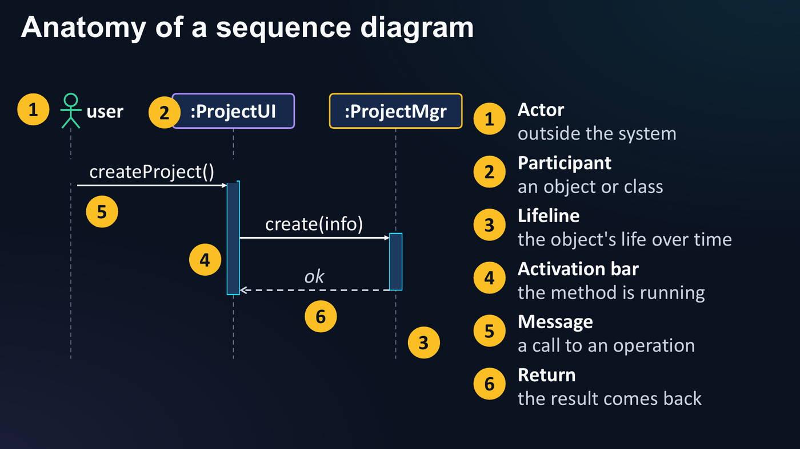
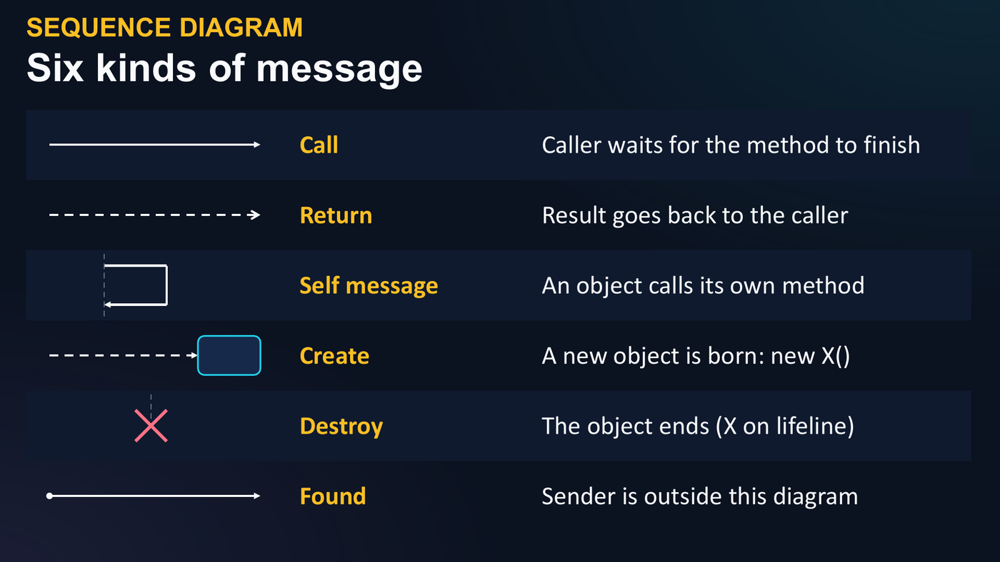
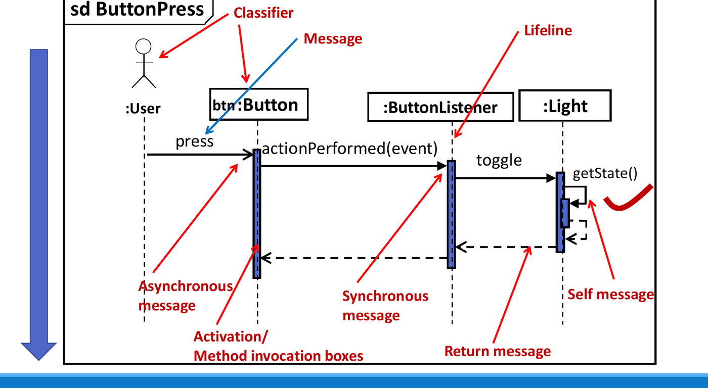
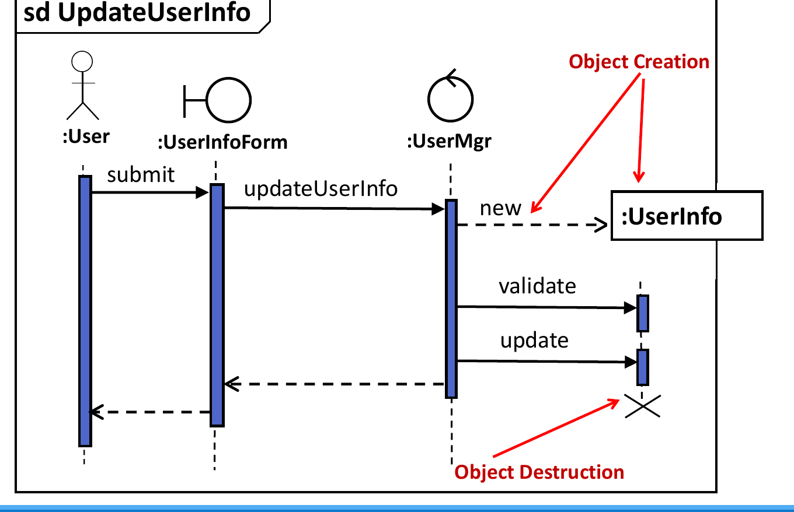
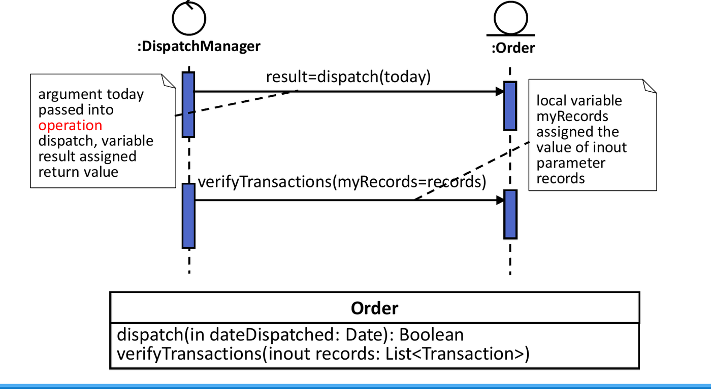
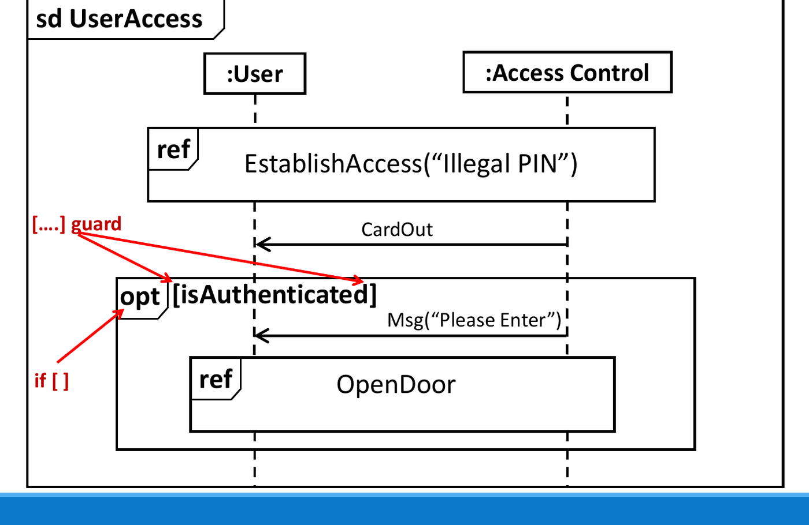
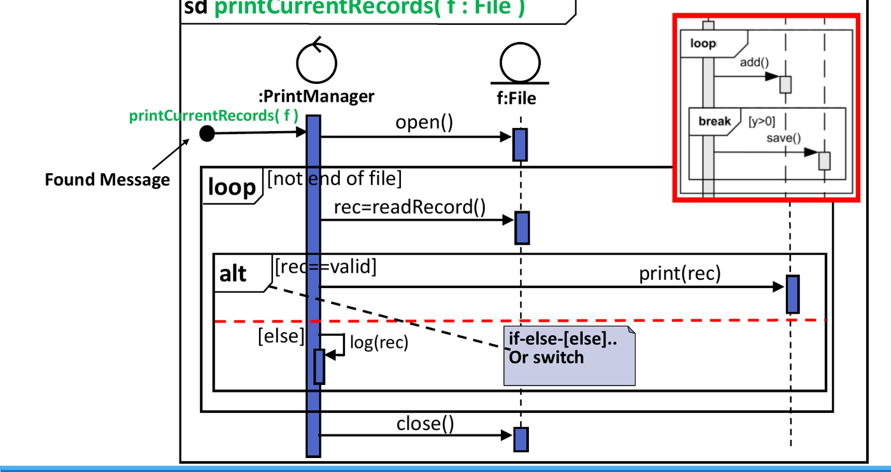
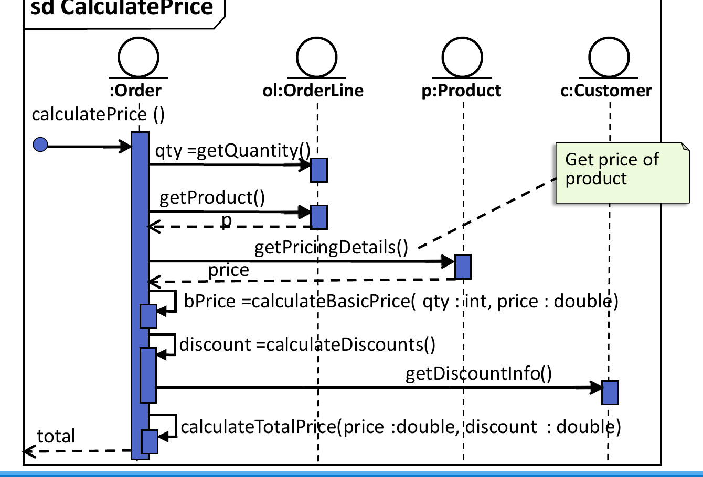
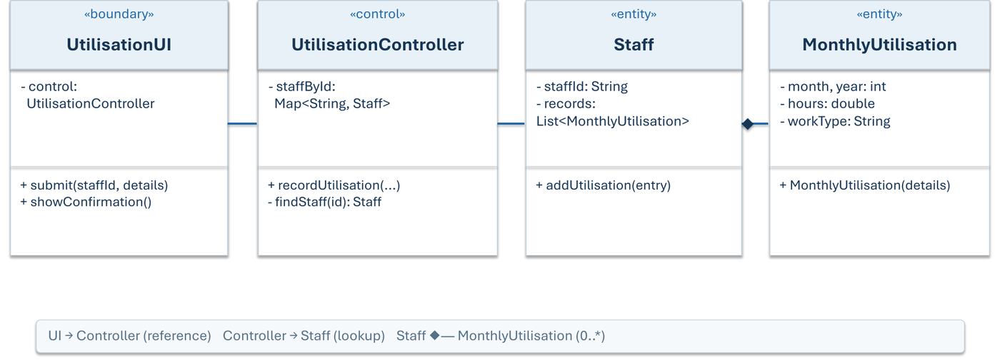
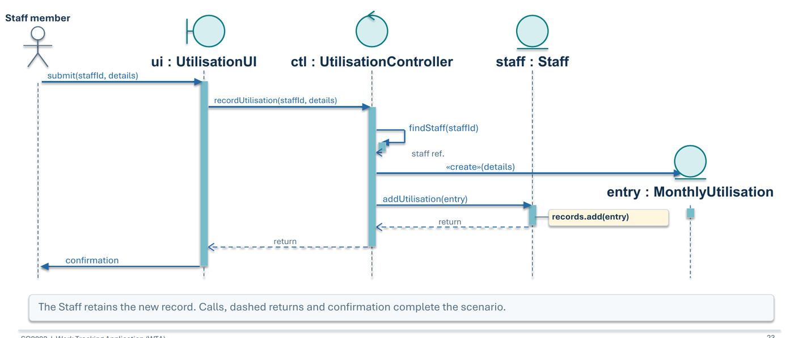

Sequence Diagrams and Modelling an OO Application
This chapter covers Lecture 7 (sequence diagrams), the Lecture 7 face-to-face session (from requirements to a sequence diagram) and Lecture 8 (modelling an OO application, CRC cards).
1. Class Diagram vs Sequence Diagram
| Class diagram | Sequence diagram | |
|---|---|---|
| Analogy | The blueprint | The CCTV recording |
| Shows | Which classes exist; their attributes, operations and relationships | Which objects take part in one scenario; who sends which message to whom, and in what order |
| Kind | Static structure, no time | Dynamic behaviour; time goes down the page |
| Scope | The whole system | One use case, often one path through it |
A class can be in the class diagram and still be absent from a given sequence diagram, if it takes no part in that scenario.
2. Elements of a Sequence Diagram

| Element | Notation | Meaning |
|---|---|---|
| Frame | Box with sd Name in the top-left corner |
The whole interaction and its name,
e.g. sd ButtonPress |
| Actor | Stick figure | A person or system outside the system |
| Participant | Box at the top: name : Class |
One object (or an anonymous one: : Class) |
| Lifeline | Dashed vertical line under the box | The life of that object over time |
| Activation bar | Thin box on the lifeline | The time that the object is running a method |
| Message | Arrow from sender to receiver | A call to an operation of the receiver |
| Return | Dashed arrow back to the caller | The result goes back |
Participant names
| Written as | Meaning |
|---|---|
ui : UtilisationUI |
An object named ui of class UtilisationUI.
ui is the object name; UtilisationUI is the
class name. |
: UtilisationUI |
Some (anonymous) object of that class |
ui |
Named object, class not shown. Avoid this in design diagrams. |
The class name must exist in the class diagram. An
actor Staff member and an
object staff : Staff are different
participants: one is the person, the other is the data about the person
inside the system.
Kinds of message

| Message | Arrow | Meaning |
|---|---|---|
| Synchronous call | Solid line, filled arrowhead | The caller waits until the method finishes. Normal method calls. |
| Asynchronous | Solid line, open arrowhead | The caller does not wait. |
| Return | Dashed line, open arrowhead, back to the caller | The result of a call. Often optional. |
| Self message | Arrow that leaves and comes back to the same lifeline | An object calls its own method (a nested activation bar). A recursive call looks the same. |
| Create | Dashed arrow (often new or
<<create>>) to the box of the
new object, placed lower on the page |
A new object starts its life here: new X() |
| Destroy | Big X at the end of a lifeline | The object ends |
| Found | Arrow that starts at a small filled circle | The sender is outside this diagram |
| Lost | Arrow that ends at a small filled circle | The message never reaches a receiver |


Message syntax

result = dispatch(today): calldispatchwith argumenttoday, and put the return value in the variableresult.verifyTransactions(myRecords = records): the parametermyRecordsgets the valuerecords.v = mymsg(16, variab) : 96: a reply that carries the return value96.mymessage(14, -, 3.14, "hello"):-means the argument is not defined.
3. Interaction Fragments
A combined fragment is a box around part of the
diagram. Its operator is in the top-left corner. A
guard in [ ] gives the condition.
| Operator | Meaning | Java |
|---|---|---|
alt |
Choose one of several parts. Dashed lines divide
the parts; each part has a guard. [else] is allowed. |
if / else if / else, switch |
opt |
Run the part only if the guard is true. One part, no else. | if with no else |
loop |
Repeat the part while the guard is true (min and max counts are optional). | for, while, do-while |
par |
The parts run in parallel. | Threads |
critical |
A critical region: other messages cannot interleave. | synchronized |
break |
Run this part instead of the rest of the enclosing fragment (an exception path). | break, exception |
ref |
Refers to another sequence diagram (an interaction use). Reuses a shared part. | A method call to a shared routine |


Keep the diagram for one scenario. Do not add a
loop for a batch, or an alt for an error path,
if the use case you are drawing does not need it.
4. Turning a Sequence Diagram into Code
Rules:
- Each message that arrives at an object is a method in that object’s class. The name, parameters and return type come from the arrow.
- The sender must be able to reach the receiver. It needs a reference: a field (association), a parameter, a local variable, or a value returned by an earlier call.
- A return arrow (or
x = call()) becomes a return value stored in a local variable. - A self message is a method of the same class,
usually
private. - A create message is
new ClassName(...). - Fragments become
if,if/elseand loops. - Partial code in an exam answer must still compile.

public class Order {
private Customer c; // Order must reach Customer
private OrderLine ol; // and OrderLine: fields (associations)
public double calculatePrice() {
int qty = ol.getQuantity();
Product p = ol.getProduct(); // return value gives the Product reference
double price = p.getPricingDetails();
double bPrice = calculateBasicPrice(qty, price); // self message
double discount = calculateDiscounts(); // self message
return calculateTotalPrice(bPrice, discount); // self message
}
private double calculateBasicPrice(int qty, double price) { return qty * price; }
private double calculateDiscounts() { return c.getDiscountInfo(); }
private double calculateTotalPrice(double price, double discount) { return price * discount; }
}
public class OrderLine {
private int qty;
private Product product;
public int getQuantity() { return qty; }
public Product getProduct() { return product; }
}
public class Product { public double getPricingDetails() { return 100.0; } }
public class Customer { public double getDiscountInfo() { return 10.0; } }Note that Order has no field for Product.
It gets the Product reference from
ol.getProduct(), so Order depends on
Product only for this method.
5. From Requirements to Design (the Model-OO Process)
- Read the requirements.
- Find the entity classes (nouns; Chapter 6, Section 11).
- Find the use cases, then add boundary and control classes.
- Draw the class diagram.
- Draw a sequence diagram for each important use case.
- Update the class diagram. The sequence diagram often shows a missing operation or class. Add it, then check the interaction again. Expect this loop.
- Implement and test.
If a sequence diagram needs a message that has no matching operation, revise the class diagram. Do not draw the arrow anyway, and do not delete the use case.
Use cases
A use case is one goal that an actor wants to reach with the system, from the trigger to the result. Name it with a verb + noun: “Record Monthly Utilisation”, “Create Project”, “Track Issue”.
- Find the actors, list each actor’s goals, and group the requirements by goal.
- A requirement says what the system must do. A use case is one user goal.
- A use case name (“Record Monthly Utilisation”) is
not a class. The entity class is
MonthlyUtilisation. - Define the scenario exactly: the actor, the trigger, what counts as
success, and how it finishes. A save is complete only when the new
record is linked to its owner and the UI confirms it,
not when
newruns.
Why boundary and control classes
Entity classes alone cannot finish a use case:
- Entities hold data and rules. They should not read input or print messages. → A boundary class talks to the user.
- A
Staffobject cannot search for itself among all staff. → A control class holds the collections and finds objects. - Someone must run the steps (find, create, attach, confirm) in order. → The control class coordinates.
Benefits: you can change the screen (console to web) and change only the boundary. You can test the rules with no UI. Each class has one reason to change (Single Responsibility, Chapter 8).
| Class kind | Rules |
|---|---|
| Boundary | One per group of related use cases. Collects input, shows output.
Checks only the input format, not business rules. Named
xxxUI / xxxForm. |
| Control | One per group of use cases. Coordinates; does not
compute. Owns the collections of entities. Usually holds the
loops. Named xxxController / xxxMgr /
xxxCtrl. |
| Entity | Holds its own data and the rules on that data. Keeps its own parts
(a Staff keeps its own records). |
A complete class diagram may include boundary, control and entity classes. They are all real classes.

Worked example: Record Monthly Utilisation

| Step | Message | From → To | Note |
|---|---|---|---|
| 1 | submit(staffId, details) |
Actor → UI | Boundary receives input |
| 2 | recordUtilisation(staffId, details) |
UI → Controller | UI holds a Controller reference |
| 3 | findStaff(staffId) |
Controller → itself | Self message: look-up in its staffById map |
| 4 | <<create>>(details) |
Controller → new entry : MonthlyUtilisation |
The entry is new, so its box is lower |
| 5 | addUtilisation(entry) |
Controller → Staff | Links the entry to its owner; Staff does
records.add(entry) |
| 6 | returns, then confirmation | Staff → Controller → UI → Actor | The UI shows the success message |
class UtilisationController {
private Map<String, Staff> staffById; // control owns the collection
void recordUtilisation(String staffId, int month, int year, double hours, String type) {
Staff staff = findStaff(staffId); // internal (self) call
MonthlyUtilisation entry = new MonthlyUtilisation(month, year, hours, type); // create
staff.addUtilisation(entry); // Controller → Staff
}
private Staff findStaff(String id) { return staffById.get(id); }
}
class Staff {
private List<MonthlyUtilisation> records = new ArrayList<>();
void addUtilisation(MonthlyUtilisation entry) { records.add(entry); } // Staff owns its records
}General points from this example:
- Creating an object and linking it to its owner are two different steps.
- Each entity keeps its own parts. The control finds objects and passes them around, but does not keep the records.
- A collection (map or list) inside the controller is an implementation detail. It is not a separate lifeline.
- The class that displays the result is the boundary (UI).
6. CRC Cards and the Blackjack Case Study
A CRC card (Class–Responsibility–Collaborator; Kent Beck and Ward Cunningham, 1989) is an index card for one class:
| Class name | Collaborators |
|---|---|
| Responsibilities (what the class knows and does) | Other classes it works with |
Why use them: they are portable (no computer), people can act out the system by moving the cards, and they teach OO thinking. Expect the first cards to change.
Steps (Blackjack example):
- Study the requirements until you understand them.
- List all the nouns: game, blackjack, dealer, house, players, player, card(s), deck, hand, face value, suit, ace, king, bet, winner…
- Eliminate nouns that are not classes:
- “Blackjack” and “game” are the system itself.
- “House” is another name for the dealer.
- “Players” and “cards”: one
Playerand oneCardclass are enough. - “Face value” and “suit” are attributes of
Card. - “Ace”, “King”, “Queen”, “Jack” are values of a card attribute, not classes.
- “Bet” can stay for future use, or be added later.
- List the verbs to find each class’s
responsibilities. A
Deckshuffles, deals the next card, and knows how many cards it has. AHandknows its value and its number of cards and can show itself. - Review: remove unneeded responsibilities, rename unclear ones.
- Fill in the CRC cards with collaborators, then draw the UML class
diagram (
Card,Deck,Hand,Dealer,Player).
7. Designing for Change (Restaurant Rush)
The group assignment adds requirements in stages (release 1, then 2, then 3) to test extensibility. Good evidence of an extensible design:
- New behaviour goes into the classes that own that responsibility. Some small setup changes are normal.
- Earlier features and their tests still work.
- Bad signs: type checks (
if customer is VIP …) spread across the code; many unrelated classes rewritten; old behaviour broken. - Build each stage for its own requirements. Do not add empty classes for future features.
8. Quiz Traps
- Sequence diagram = one scenario over time (the “CCTV”). Class diagram = static structure (the “blueprint”).
ui : UtilisationUI:uiis the object,UtilisationUIis the class.- Filled arrowhead = synchronous; open arrowhead = asynchronous; dashed = return; X = destroy; create points at the new box.
- A return goes back to the caller (Controller → UI for a UI → Controller call).
alt= if/else;opt= if with no else;loop= repeat;ref= another diagram;par= parallel;break= exit path.- Every message received means an operation in the receiver’s class, and the sender needs a reference to the receiver (it does not need to inherit from it).
- Boundary displays; control coordinates and holds collections; entity holds data. A use case name is not a class.
- A missing operation found in a sequence diagram means: update the class diagram.